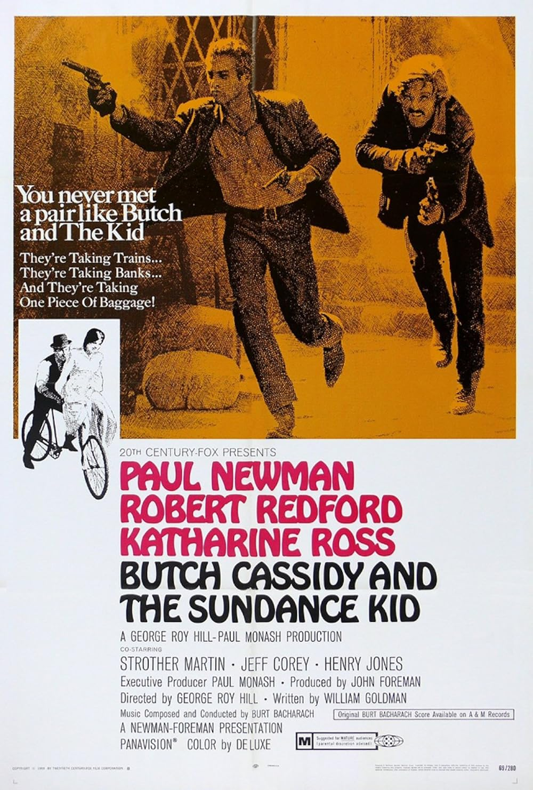

Butch Cassidy and the Sundance Kid
42nd Academy Awards
(Oscars 1970)
7 Nominations, 4 Awards
| Nominations | ||
|---|---|---|
| Category | Nominees | Result |
| Best Picture | John Foreman | Nominated |
| Directing | George Roy Hill | Nominated |
| Writing (Story and Screenplay--based on material not previously published or produced) | William Goldman | Won |
| Cinematography | Conrad Hall | Won |
| Sound | David Dockendorf and William Edmondson | Nominated |
| Music (Original Score--for a motion picture [not a musical]) | Burt Bacharach | Won |
| Music (Song--Original for the Picture) "Raindrops Keep Fallin' On My Head" |
Burt Bacharach and Hal David | Won |